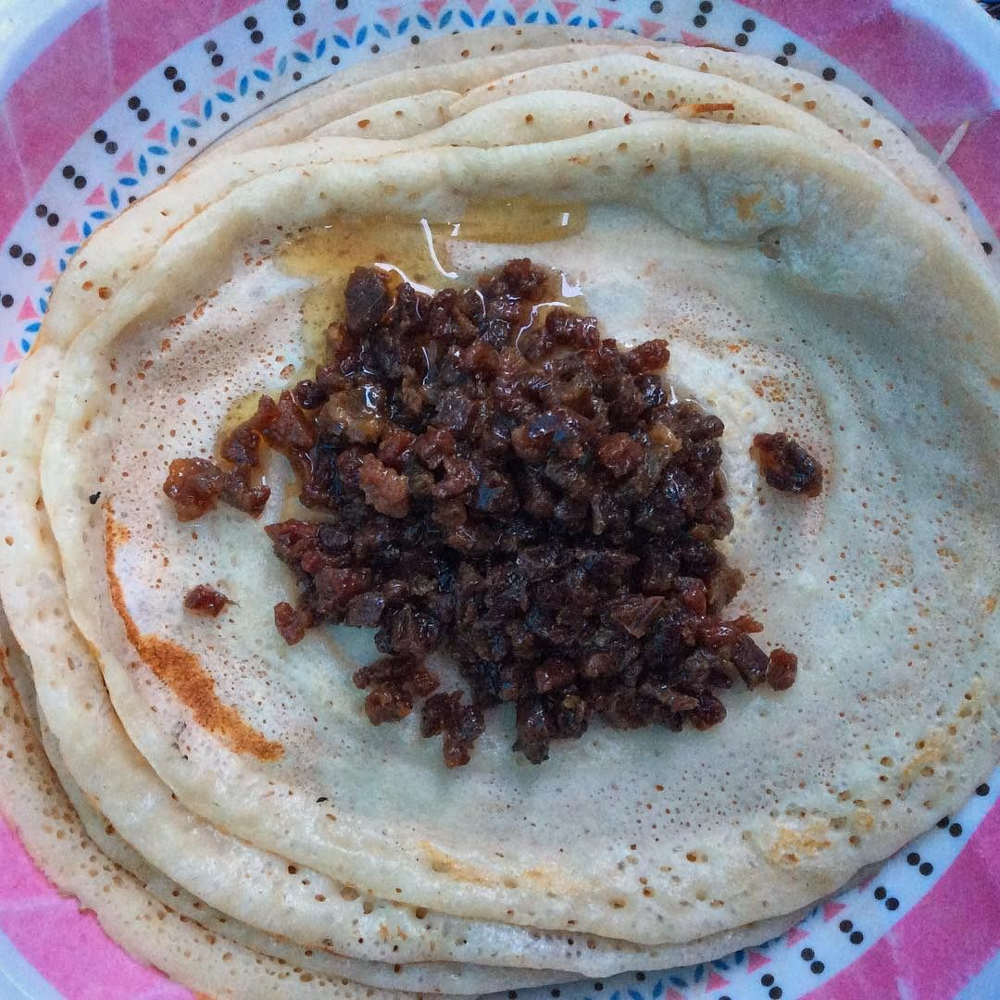

Oodkac

Description
Oodkac also known as Muqmad, is a Somali dish consisting of preserved meat. The term muqmad is used in the north is more popular in the north while the term oodkac is more popular in central and southern parts of Somalia.
It is typically eaten with Canjeero (similar to the picture above), but sometimes by itself. Although it is usually eaten for breakfast and lunch, it is also sometimes eaten for dinner
Ingredients
- 2 kg of lean beef or camel if you can get it (ask your butcher to cut it muqmad or odkac style or dice it finely yourself into ½ cm cubes)
- 500g ghee
- 1 cup of sultanas (optional, but it adds a sweetness that enhances the meat’s flavour)
- 1 small onion, finely diced
- 1 teaspoon cardamom powder
- 2 cloves garlic, minced
- 1 table spoon of salt
Steps
- Heat up the one cup of oil over medium heat and fry the meat until the meat’s natural juices has evaporated. This should take about 30 minutes. The meat will look like dried raisins or sultanas.
- Drain the oil and keep the meat in a large bowl to cool. Keep the oil in a container and use to cook other meals.
- Fry the onion, garlic and cardamom powder in the 500g of ghee over medium heat until the onion is nicely browned.
- Sieve the fragrant and spiced ghee over the muqmad, which is now ready to be stored in an airtight container.
Home